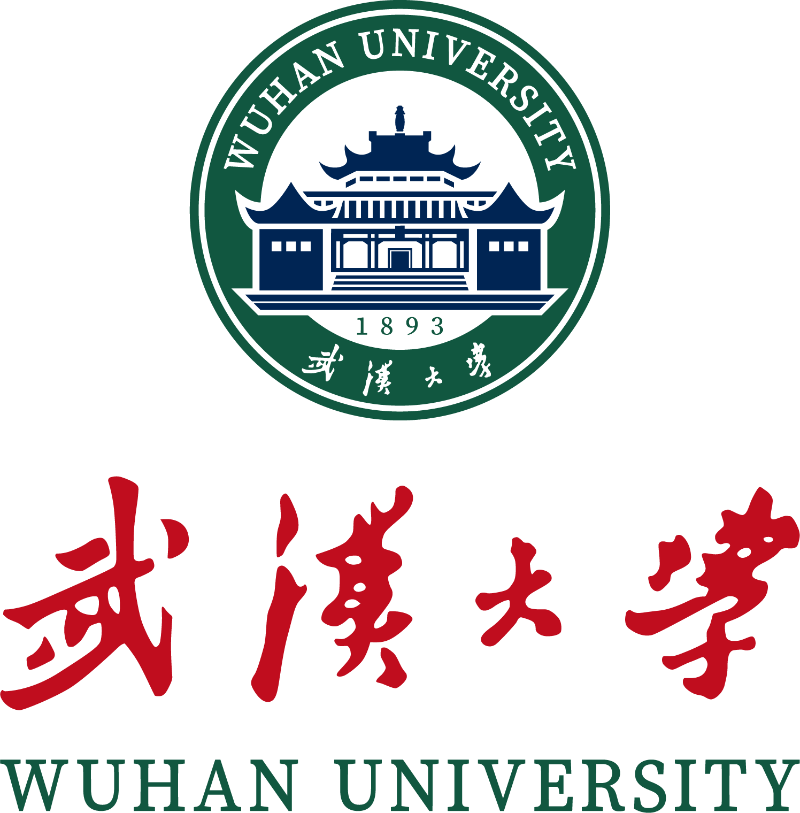
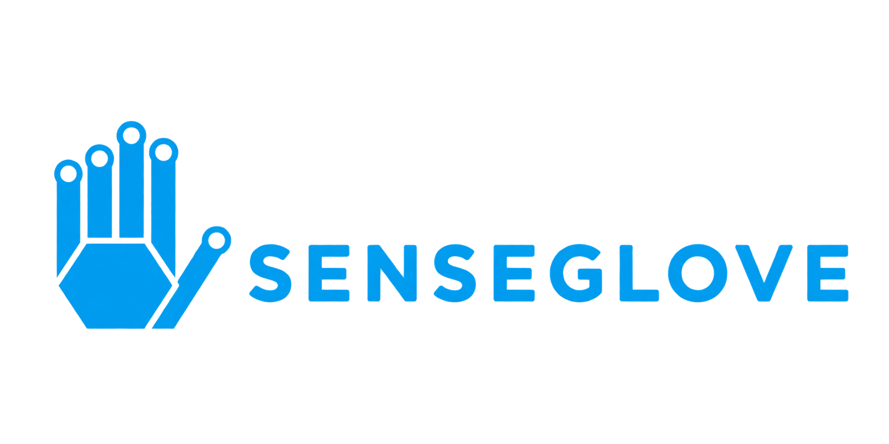
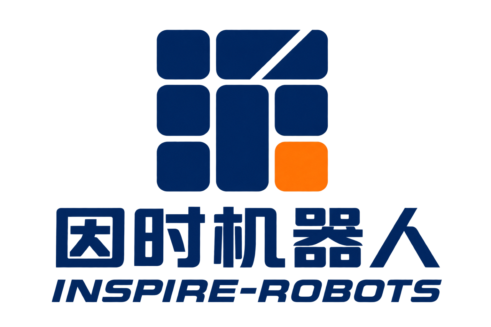
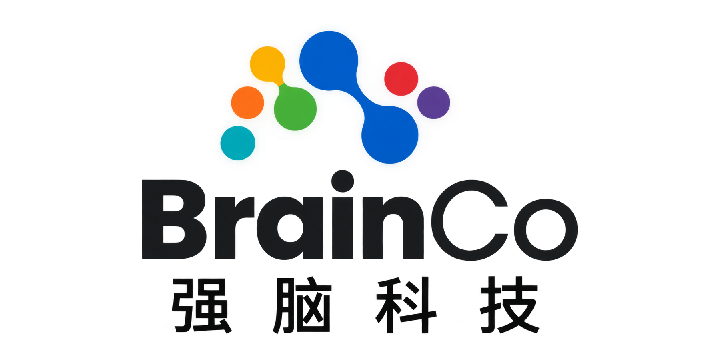
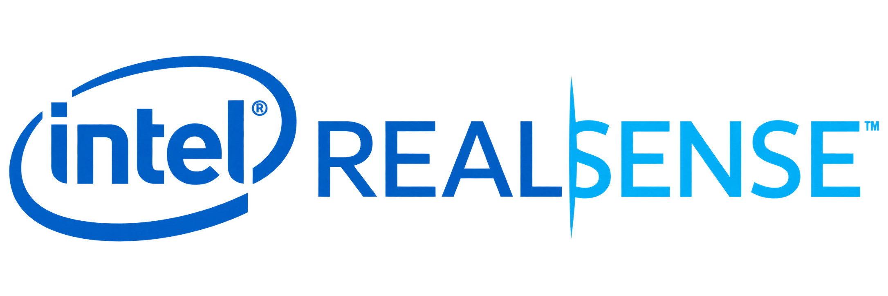
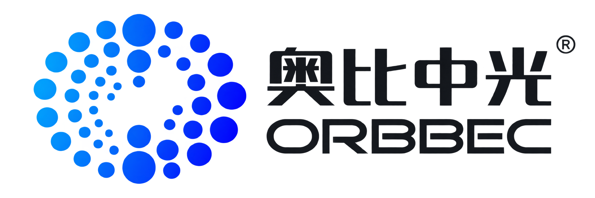
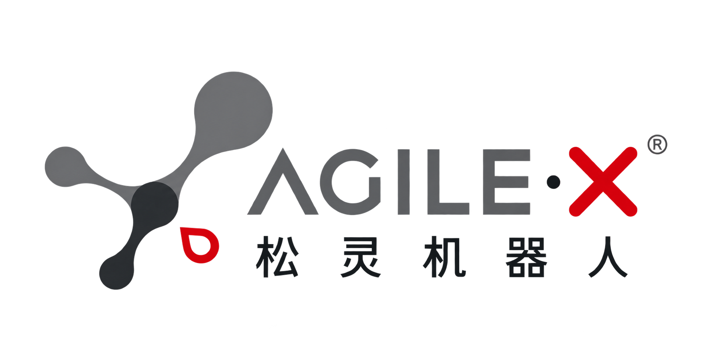
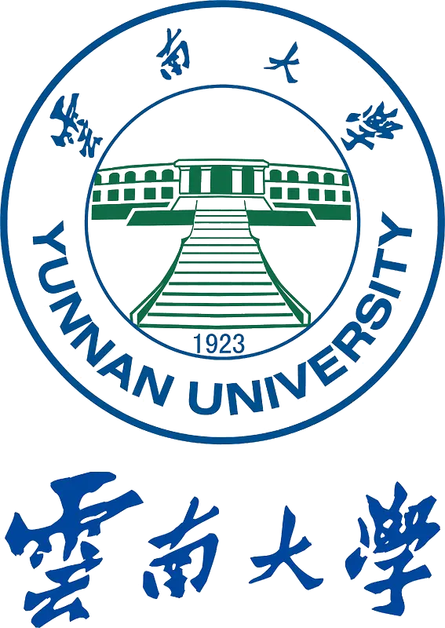

中国南方电网 · 南网科技
具身智能研究实习生
面向电力作业场景开展具身智能机器人研究，负责遥操作系统、数据采集、操作策略学习与真机部署。围绕 AgileX Piper X、Unitree G1、BrainCo / Inspire 灵巧手与 SenseGlove Nova 2 打通技术链路。
EMBODIED AI · ROBOTICS
进入主页
-2026
李靖扬 Li Jingyang
Embodied AI - M.S. Student
具身智能与机器人｜VLA · 机器人遥操作 · 数据采集 · 真机部署






EXPERIENCE
具身智能研究实习生
面向电力作业场景开展具身智能机器人研究，负责遥操作系统、数据采集、操作策略学习与真机部署。围绕 AgileX Piper X、Unitree G1、BrainCo / Inspire 灵巧手与 SenseGlove Nova 2 打通技术链路。
机器人技术 · 硕士研究生
智能机器人研究中心，GPA 3.59 / 4.00，平均分 90。

数字媒体技术 · 本科
大学英语六级；获校长奖学金暨校级优秀毕业生，位列全校前 0.5%。
COMPETITIONS & AWARDS
2025 届 · 校级 · 前 0.5%（全校仅数十人）
韩国仁川 · Invic 团队成员 · 决策模块调试协助
技术组团队成员 · 数据采集与模型训练负责人 · 备赛中
ABOUT ME
长期接触人形机器人、机械臂、灵巧手、机器狗等多类型机器人本体，具备较丰富的真机开发、调试与部署经验。
实际开发和部署过 Unitree G1 / B2、Piper X、Revo2 / Inspire、SenseGlove Nova 2 与 Pico 等设备，熟悉 ROS 2、DDS、CAN、UDP / TCP、多主机通信及机器人软硬件系统集成。
熟悉 VLA 与模仿学习完整工作流，能够独立完成环境搭建、设备接入、遥操作、数据采集、模型训练、跨主机联调与真机验证。也善于使用 Codex 等 AI Coding 工具提升工程效率，并快速适配新的机器人本体与算法框架。